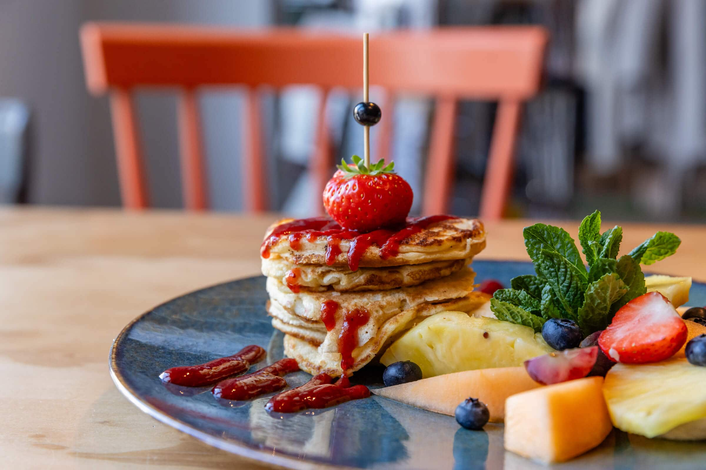
Ontbijt
Een goede dag begint hier. Je krijgt je ontbijt op een plank: koffie of thee, verse sinaasappelsap, een verse croissant, een belegd broodje en een miniyoghurt.
Lunchroom & catering in Lichtenvoorde
Verse lunch, zelfgebakken taart en een goede kop koffie op de Markt. Klaargemaakt en geserveerd door een team dat hier groeit in zijn werk.
4,8 uit 215 Google-reviews
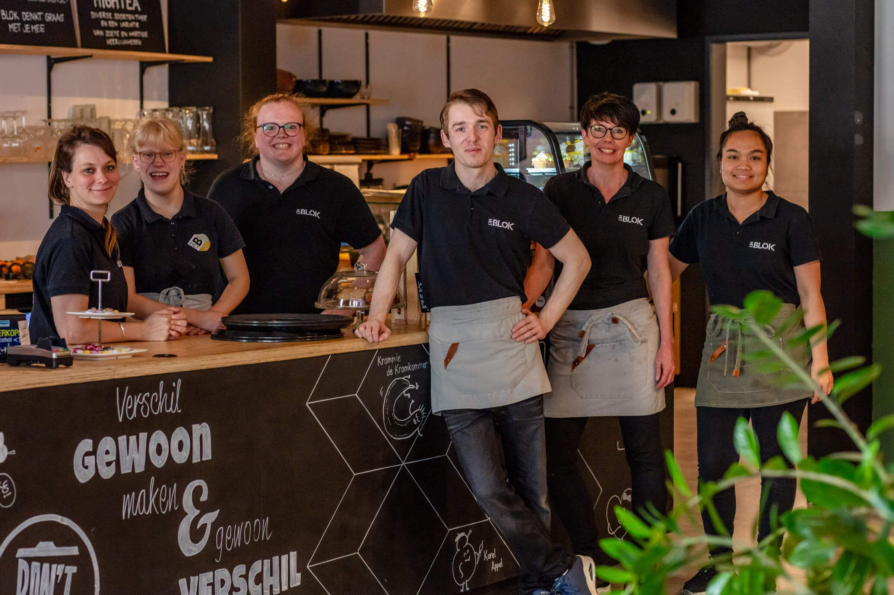
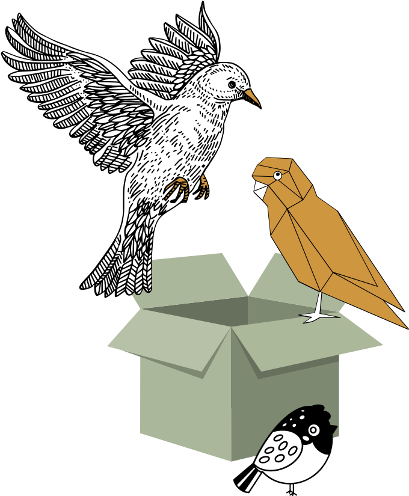
De kaart wisselt regelmatig. Onze kok maakt er haar persoonlijke missie van om samen met de medewerkers de lekkerste, bijzondere en seizoensgebonden gerechten op tafel te zetten. Die passie zie en proef je.

Een goede dag begint hier. Je krijgt je ontbijt op een plank: koffie of thee, verse sinaasappelsap, een verse croissant, een belegd broodje en een miniyoghurt.
Dagverse soep, luxe belegde broodjes, yoghurt in een weckpot, tosti's en salades van het seizoen. Vegetarisch, veganistisch, glutenvrij of lactosevrij? Dat kan.
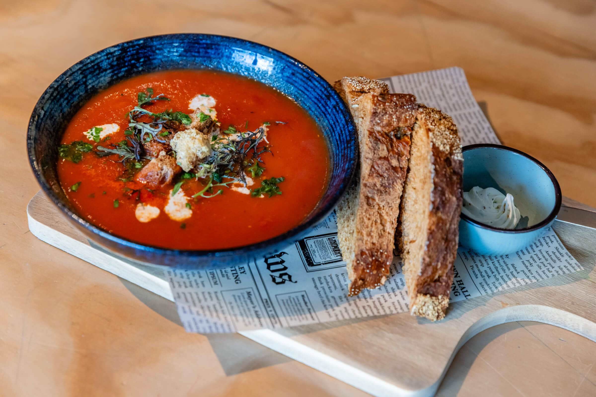
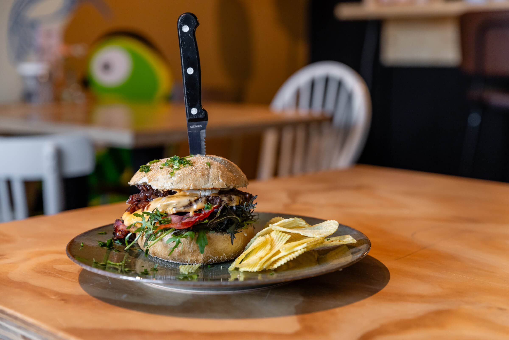
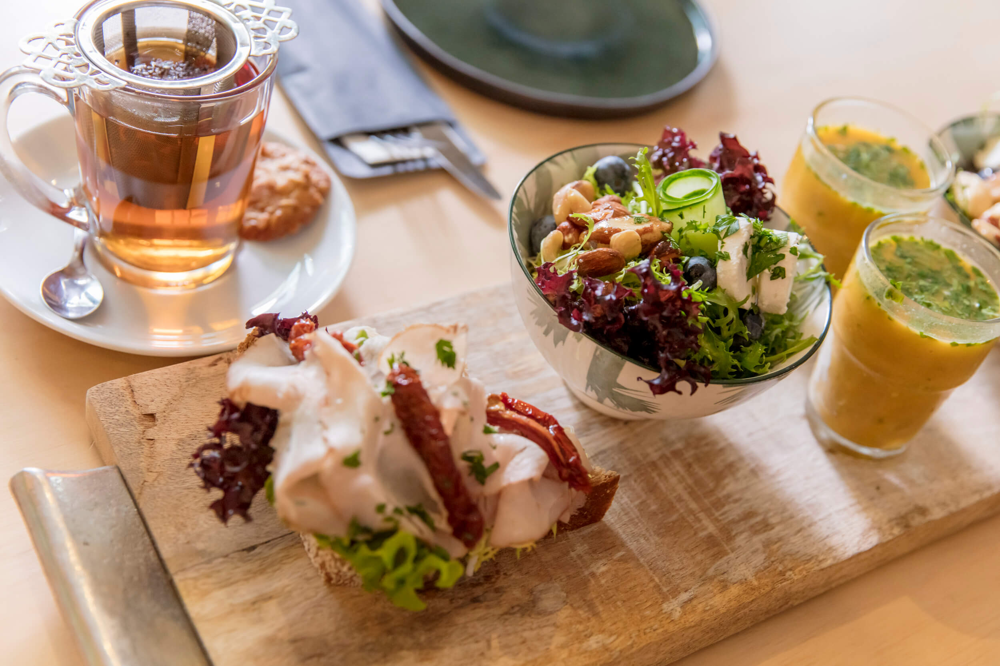
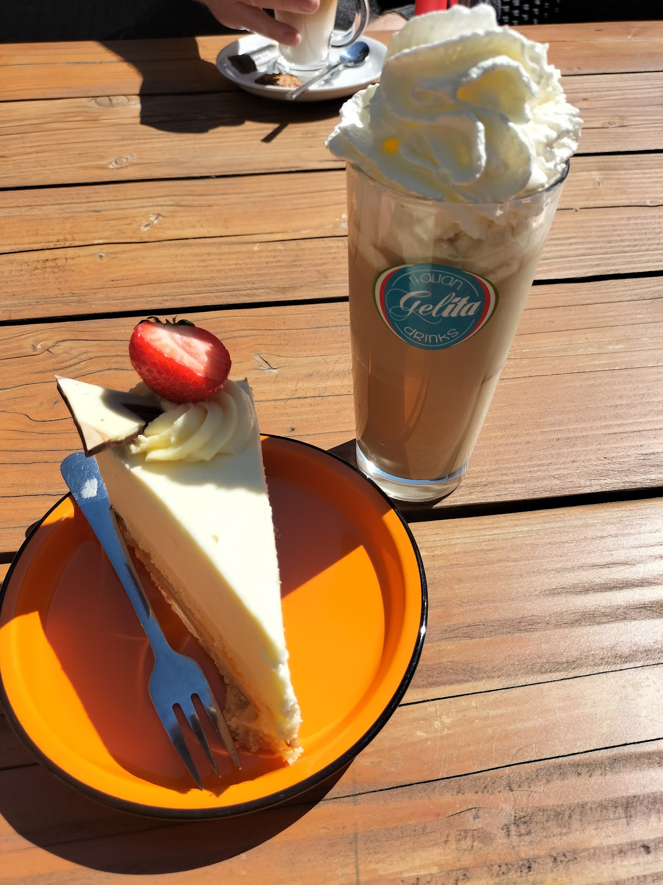
Als je binnenloopt, ruik je het al: taart, brownies, havermout- en roomboterkoekjes, 's ochtends vers gebakken door onze medewerkers. In de zomer schep je bij ons echt Italiaans ijs, met coupes vol vers fruit, zelfgemaakte schuimpjes of stukjes brownie.
Even bijkomen met collega's of vrienden. We schenken biologische, lokale en speciale wijnen en bieren, met een borrelplank met kaas, vleeswaren, olijven, nootjes, brood en dips.
Feest, receptie of bedrijfsuitje? Voor groepen maken we een arrangement op maat. Bel ons even.
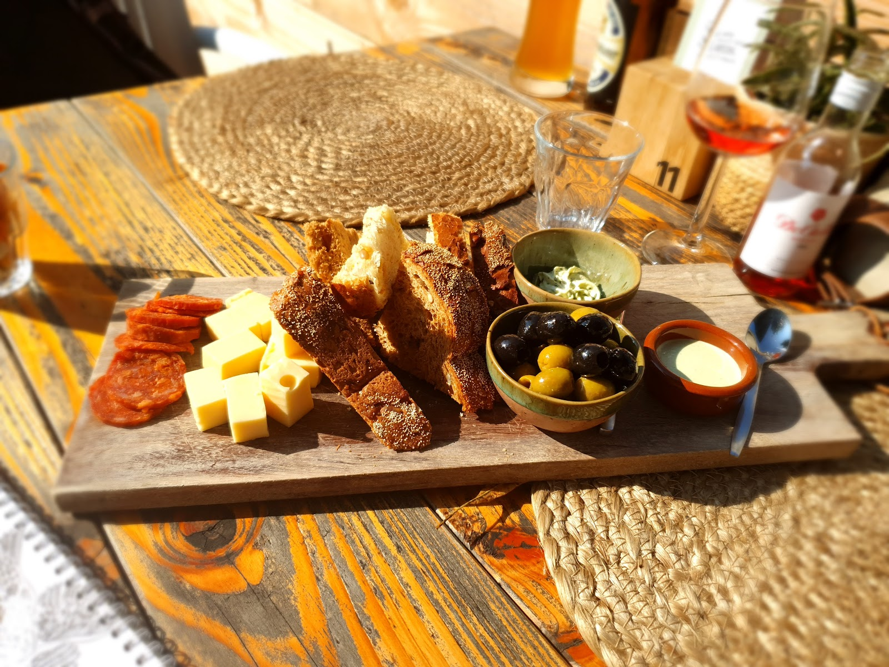
Reserveer minimaal een dag van tevoren, dan staat alles voor je klaar.
Reserveer: 0544 727 010In elk bedrag vanaf € 5,00, of speciaal voor een high tea. Altijd een goed cadeau.
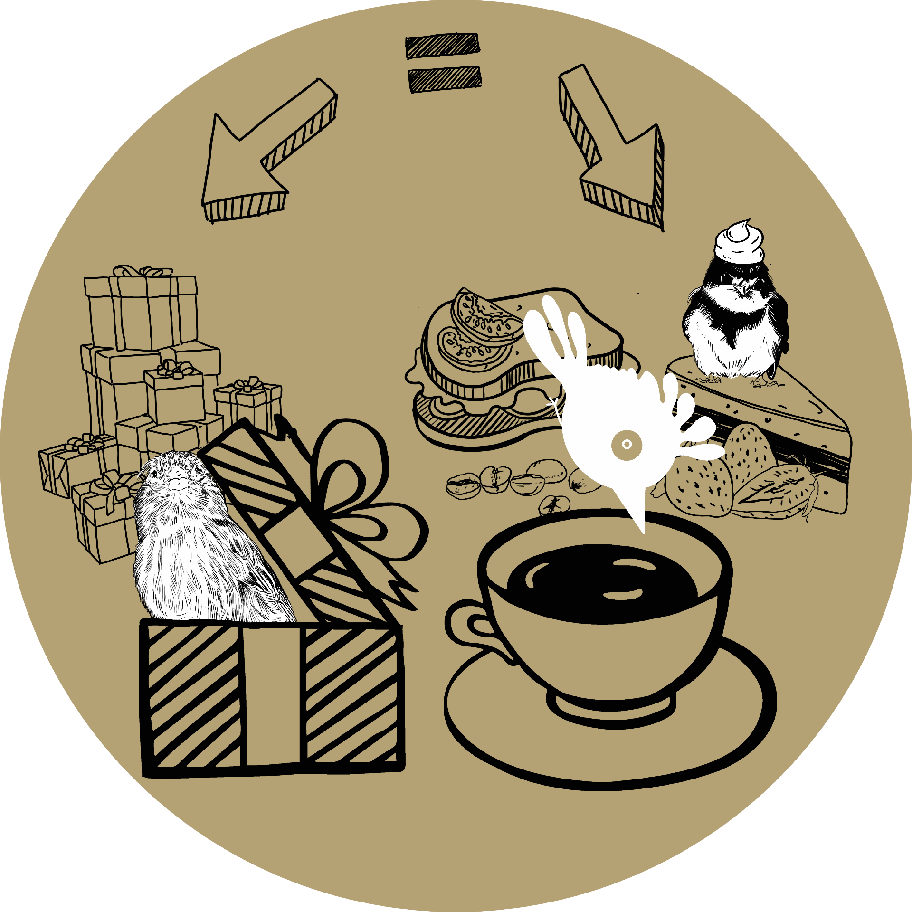
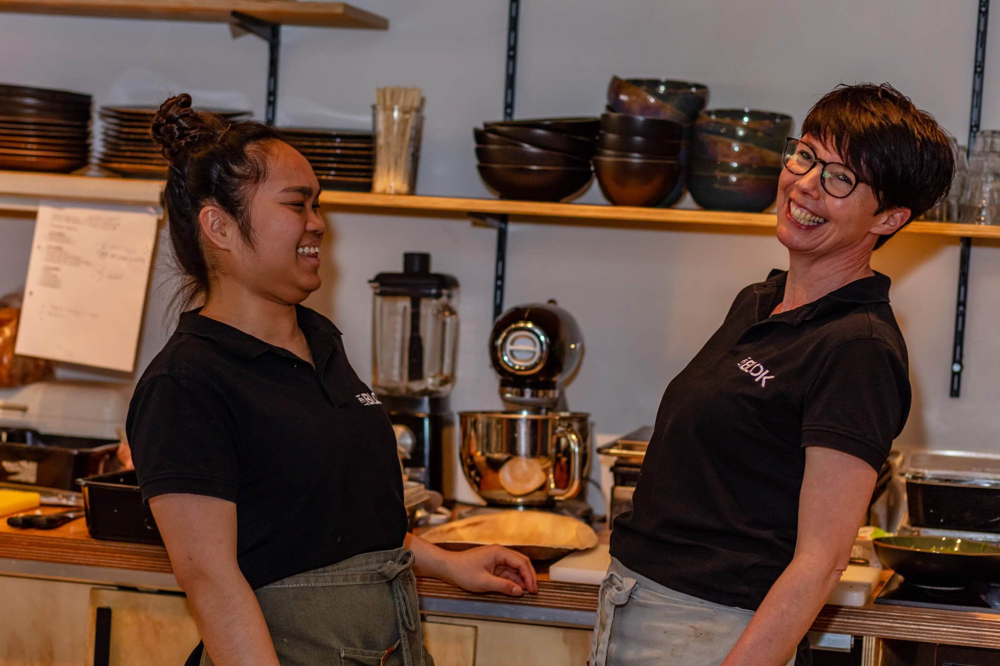
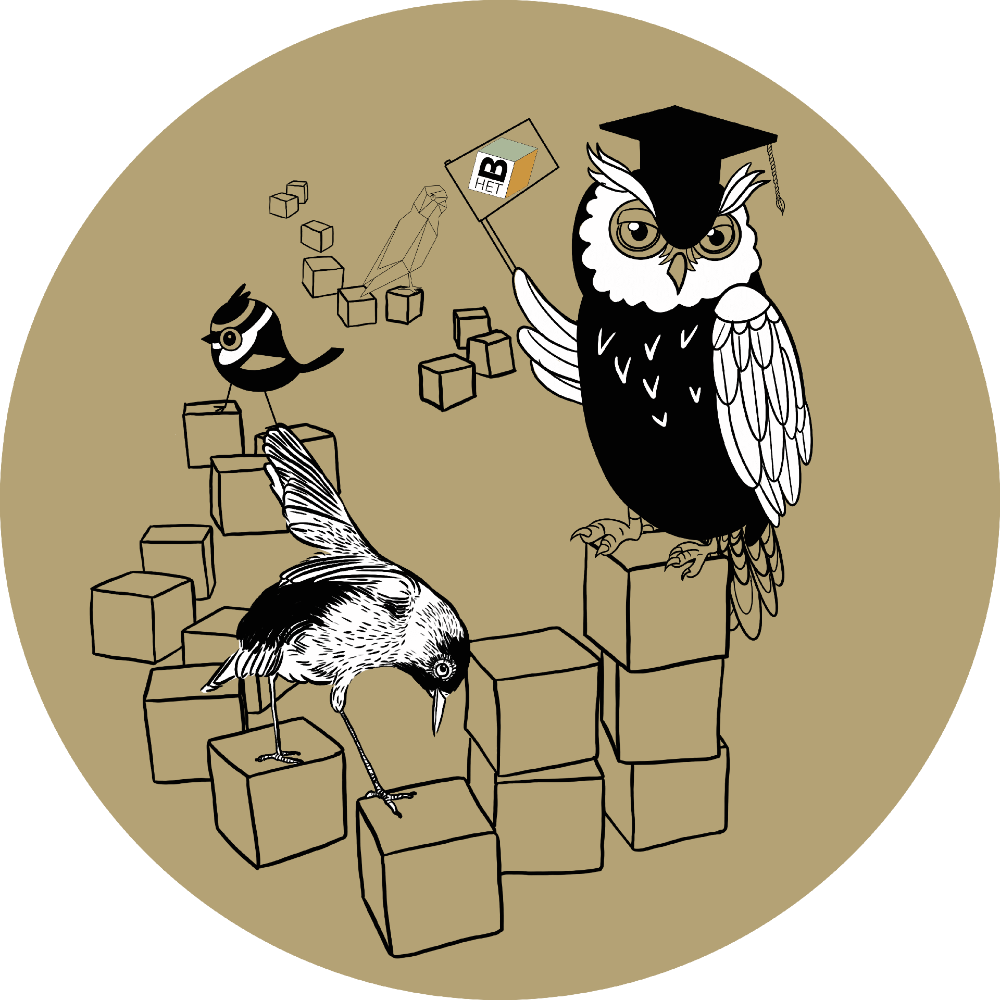
Bij Het Blok krijgen mensen met een afstand tot de arbeidsmarkt waardevol werk. Gemiddeld 24 medewerkers volgen bij ons een leerwerktraject of arbeidsmatige dagbesteding, begeleid door ervaren professionals. Sommigen stromen door naar een reguliere baan, anderen blijven graag bij ons.
Kwaliteit en service vinden we belangrijk. Maar groei, ontwikkeling en plezier in het werk: daarom doen we wat we doen.
We zijn een erkend leer- en werkbedrijf en begeleiden studenten horeca, bakkerij en dienstverlening. Ook zonder vacature ben je welkom om contact op te nemen.
Mail info@hetbloklichtenvoorde.nlEen zakelijke lunch, een verjaardag, bruiloft of festival in Lichtenvoorde en Oost-Gelre: wij verzorgen de catering. Van luxe belegde broodjes en dagverse soep tot borrelhapjes, versgebakken taart en smoothies. En onze medewerkers doen zo ervaring op buiten de lunchroom.
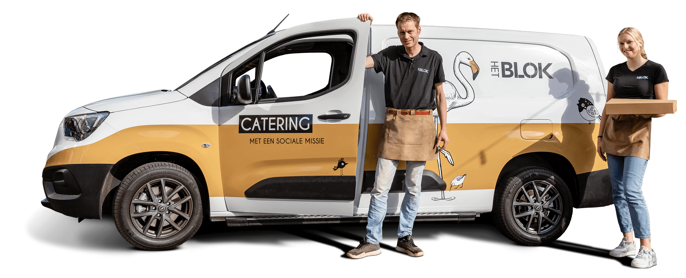
Ook borrelhapjes, warme hapjes, salades en losse broodjes. Bestel minimaal vijf dagen van tevoren.
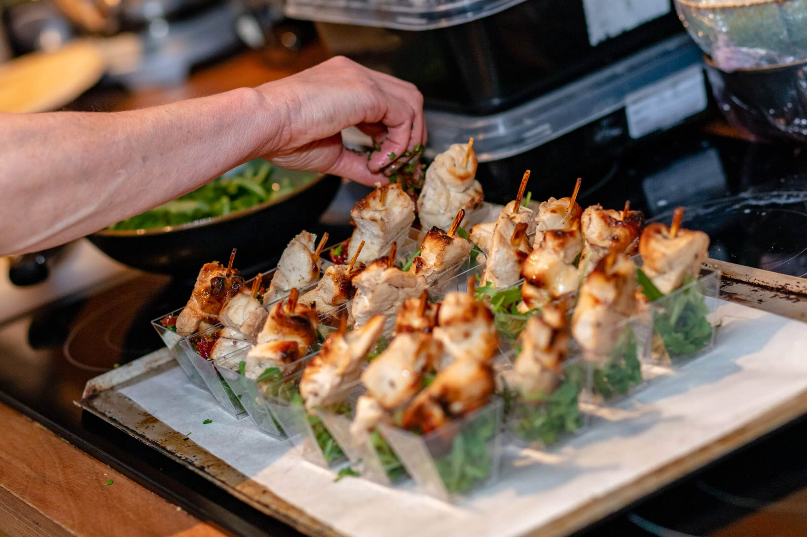
Iets speciaals in gedachten? We denken graag met je mee.
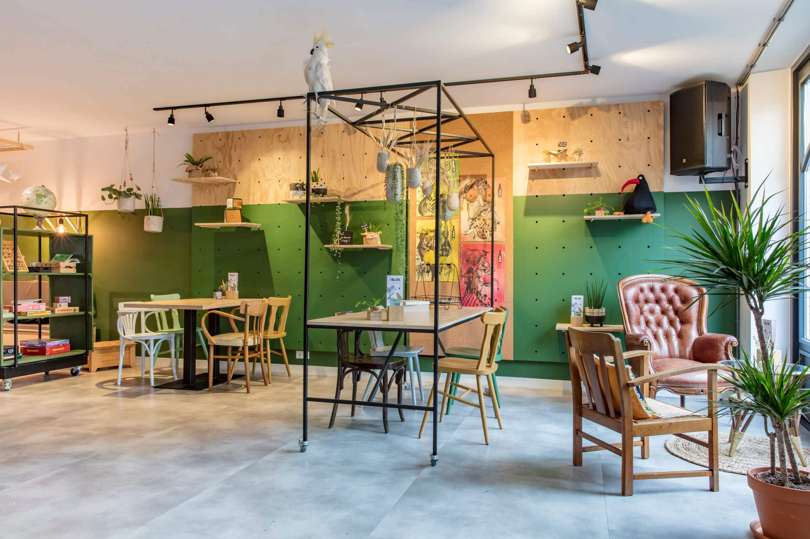
Automatische schuifdeuren, brede paden en een ruim invalidentoilet: iedereen komt makkelijk binnen. Voor de kleintjes is er een speelhoek met een speelgoedkeuken waar ze zelf koken, bakken en afrekenen, en er staan speciale kindergerechten op de kaart.
4,8 uit 215 reviews op Google
"Heerlijke plek! Wij hebben buiten gezeten met een fantastische taartpunt! Ook voor ons zoontje van 1 was er genoeg gezonds op de kaart zoals bijvoorbeeld fruit, fantastisch. Binnen is ook een leuk speelgedeelte voor kinderen! En er is een verschoonplek aanwezig 😃 Personeel was erg vriendelijk!"
"Vanmiddag heerlijk geluncht bij Het Blok. De sfeer is gezellig en ontspannen, perfect om even rustig te genieten van een goede lunch. De bediening was vriendelijk en attent, en het eten werd snel geserveerd. Alles was vers, smaakvol en mooi gepresenteerd. Zeker een plek waar ik graag nog eens terugkom."
"Toevallig rond lunchtijd in Lichtenvoorde. Op de Markt een prettige eetgelegenheid gevonden. Gezellige drukte met gemengde leeftijden. Behalve thee genoten van een oosters broodje kip en een mini 12-uurtje ook met kip en hartige taart. Alles met veel smaak en mooi klaargemaakt. Daarnaast met een portie vriendelijkheid"
"Lekker gegeten, leuke ambiance."
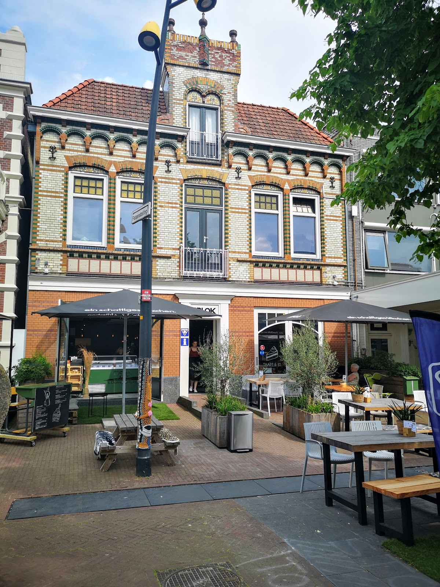
| Maandag | gesloten |
| Dinsdag | 9.30 – 17.00 |
| Woensdag | 9.30 – 17.00 |
| Donderdag | 9.30 – 17.00 |
| Vrijdag | 9.30 – 17.00 |
| Zaterdag | 9.30 – 17.00 |
| Zondag | 11.30 – 17.00 |